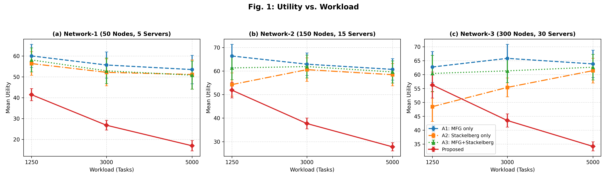
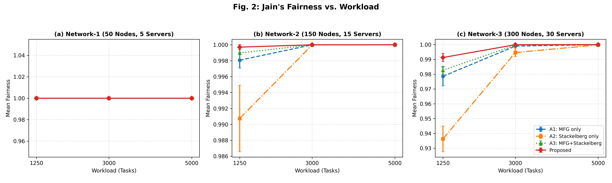
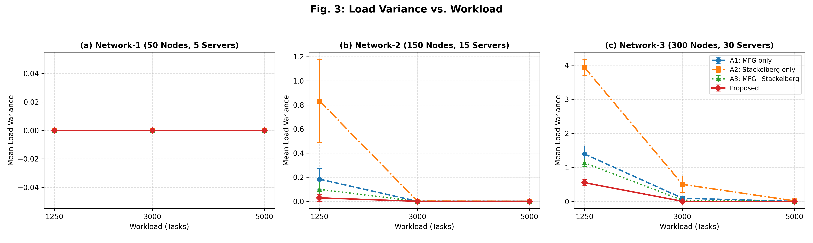
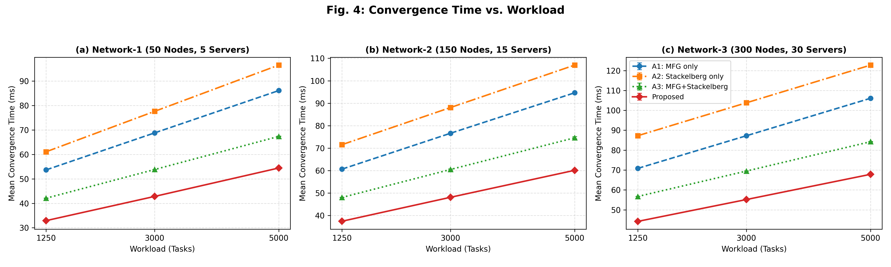
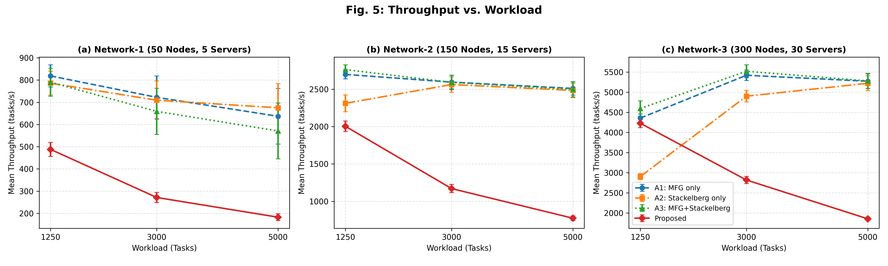
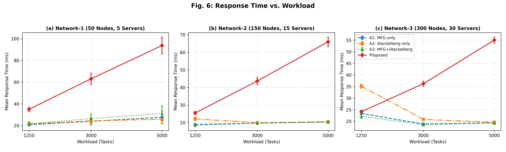

| Parameter | Network-1 (Small) | Network-2 (Intermediate) | Network-3 (Stress) |
|---|---|---|---|
| Edge nodes | 50 | 150 | 300 |
| Edge servers | 5 | 15 | 30 |
| CPU capacity per node | 2–8 cores | 2–8 cores | 2–8 cores |
| RAM per node | 4–16 GB | 4–16 GB | 4–16 GB |
| Storage per node | 64–256 GB | 64–256 GB | 64–256 GB |
| Bandwidth per node | 50–200 Mbps | 50–200 Mbps | 50–200 Mbps |
| Maximum CPU utilization | 85% | 85% | 85% |
| Maximum RAM utilization | 90% | 90% | 90% |
| Maximum latency | 50 ms | 50 ms | 50 ms |
| Load: 1,250 tasks – tasks/node | 25 | 8.33 | 4.17 |
| Load: 3,000 tasks – tasks/node | 60 | 20 | 10 |
| Load: 5,000 tasks – tasks/node | 100 | 33.33 | 16.67 |
| Feasible node count | Dynamic | Dynamic | Dynamic |
| Network | Metric | Eligibility rule | 1,250 tasks | 3,000 tasks | 5,000 tasks |
|---|---|---|---|---|---|
| N1 | CPU | Available CPU >= task demand | Apply (100.0% viable) | Apply (100.0% viable) | Apply (100.0% viable) |
| N1 | RAM | Available RAM >= task demand | Apply (100.0% viable) | Apply (100.0% viable) | Apply (100.0% viable) |
| N1 | Storage | Available storage >= task demand | Apply (100.0% viable) | Apply (100.0% viable) | Apply (100.0% viable) |
| N1 | Bandwidth | Available bandwidth >= task demand | Apply (100.0% viable) | Apply (100.0% viable) | Apply (100.0% viable) |
| N1 | Latency | Estimated latency <= 50 ms | Apply (100.0% viable) | Apply (100.0% viable) | Apply (100.0% viable) |
| N1 | CPU utilization | Projected utilization <= 85% | Apply (99.2% viable) | Apply (100.0% viable) | Apply (100.0% viable) |
| N1 | RAM utilization | Projected utilization <= 90% | Apply (100.0% viable) | Apply (100.0% viable) | Apply (100.0% viable) |
| Network | Metric | Eligibility rule | 1,250 tasks | 3,000 tasks | 5,000 tasks |
|---|---|---|---|---|---|
| N2 | CPU | Available CPU >= task demand | Apply (100.0% viable) | Apply (100.0% viable) | Apply (100.0% viable) |
| N2 | RAM | Available RAM >= task demand | Apply (100.0% viable) | Apply (100.0% viable) | Apply (100.0% viable) |
| N2 | Storage | Available storage >= task demand | Apply (100.0% viable) | Apply (100.0% viable) | Apply (100.0% viable) |
| N2 | Bandwidth | Available bandwidth >= task demand | Apply (100.0% viable) | Apply (100.0% viable) | Apply (100.0% viable) |
| N2 | Latency | Estimated latency <= 50 ms | Apply (100.0% viable) | Apply (100.0% viable) | Apply (100.0% viable) |
| N2 | CPU utilization | Projected utilization <= 85% | Apply (99.2% viable) | Apply (99.4% viable) | Apply (99.2% viable) |
| N2 | RAM utilization | Projected utilization <= 90% | Apply (100.0% viable) | Apply (100.0% viable) | Apply (100.0% viable) |
| Network | Metric | Eligibility rule | 1,250 tasks | 3,000 tasks | 5,000 tasks |
|---|---|---|---|---|---|
| N3 | CPU | Available CPU >= task demand | Apply (100.0% viable) | Apply (100.0% viable) | Apply (100.0% viable) |
| N3 | RAM | Available RAM >= task demand | Apply (100.0% viable) | Apply (100.0% viable) | Apply (100.0% viable) |
| N3 | Storage | Available storage >= task demand | Apply (100.0% viable) | Apply (100.0% viable) | Apply (100.0% viable) |
| N3 | Bandwidth | Available bandwidth >= task demand | Apply (100.0% viable) | Apply (100.0% viable) | Apply (100.0% viable) |
| N3 | Latency | Estimated latency <= 50 ms | Apply (100.0% viable) | Apply (100.0% viable) | Apply (100.0% viable) |
| N3 | CPU utilization | Projected utilization <= 85% | Apply (99.1% viable) | Apply (99.2% viable) | Apply (99.2% viable) |
| N3 | RAM utilization | Projected utilization <= 90% | Apply (100.0% viable) | Apply (100.0% viable) | Apply (100.0% viable) |
| Exp. | Network | Edge Nodes | Servers | Task Load | Tasks/Node | Task Profile | Observed Priority Distribution (P1–P4) | Mean Feasible Nodes |
|---|---|---|---|---|---|---|---|---|
| E1 | N1 | 50 | 5 | 1250 | 25.00 | T1 | P1:115 (9.2%), P2:644 (51.5%), P3:436 (34.9%), P4:55 (4.4%) | 50.0 |
| E2 | N1 | 50 | 5 | 1250 | 25.00 | T2 | P1:46 (3.7%), P2:396 (31.7%), P3:628 (50.2%), P4:180 (14.4%) | 50.0 |
| E3 | N1 | 50 | 5 | 1250 | 25.00 | T3 | P1:6 (0.5%), P2:223 (17.8%), P3:609 (48.7%), P4:412 (33.0%) | 47.9 |
| E4 | N1 | 50 | 5 | 3000 | 60.00 | T1 | P1:280 (9.3%), P2:1585 (52.8%), P3:1002 (33.4%), P4:133 (4.4%) | 50.0 |
| E5 | N1 | 50 | 5 | 3000 | 60.00 | T2 | P1:102 (3.4%), P2:1050 (35.0%), P3:1410 (47.0%), P4:438 (14.6%) | 50.0 |
| E6 | N1 | 50 | 5 | 3000 | 60.00 | T3 | P1:18 (0.6%), P2:495 (16.5%), P3:1453 (48.4%), P4:1034 (34.5%) | 48.9 |
| E7 | N1 | 50 | 5 | 5000 | 100.00 | T1 | P1:476 (9.5%), P2:2605 (52.1%), P3:1677 (33.5%), P4:242 (4.8%) | 50.0 |
| E8 | N1 | 50 | 5 | 5000 | 100.00 | T2 | P1:140 (2.8%), P2:1737 (34.7%), P3:2346 (46.9%), P4:777 (15.5%) | 49.8 |
| E9 | N1 | 50 | 5 | 5000 | 100.00 | T3 | P1:45 (0.9%), P2:774 (15.5%), P3:2364 (47.3%), P4:1817 (36.3%) | 48.6 |
| E10 | N2 | 150 | 15 | 1250 | 8.33 | T1 | P1:133 (10.6%), P2:604 (48.3%), P3:442 (35.4%), P4:71 (5.7%) | 149.7 |
| E11 | N2 | 150 | 15 | 1250 | 8.33 | T2 | P1:33 (2.6%), P2:444 (35.5%), P3:590 (47.2%), P4:183 (14.6%) | 148.5 |
| E12 | N2 | 150 | 15 | 1250 | 8.33 | T3 | P1:10 (0.8%), P2:192 (15.4%), P3:640 (51.2%), P4:408 (32.6%) | 147.6 |
| E13 | N2 | 150 | 15 | 3000 | 20.00 | T1 | P1:253 (8.4%), P2:1618 (53.9%), P3:998 (33.3%), P4:131 (4.4%) | 149.9 |
| E14 | N2 | 150 | 15 | 3000 | 20.00 | T2 | P1:91 (3.0%), P2:1044 (34.8%), P3:1422 (47.4%), P4:443 (14.8%) | 148.4 |
| E15 | N2 | 150 | 15 | 3000 | 20.00 | T3 | P1:22 (0.7%), P2:476 (15.9%), P3:1455 (48.5%), P4:1047 (34.9%) | 147.4 |
| E16 | N2 | 150 | 15 | 5000 | 33.33 | T1 | P1:498 (10.0%), P2:2524 (50.5%), P3:1768 (35.4%), P4:210 (4.2%) | 149.9 |
| E17 | N2 | 150 | 15 | 5000 | 33.33 | T2 | P1:163 (3.3%), P2:1719 (34.4%), P3:2398 (48.0%), P4:720 (14.4%) | 149.0 |
| E18 | N2 | 150 | 15 | 5000 | 33.33 | T3 | P1:40 (0.8%), P2:830 (16.6%), P3:2470 (49.4%), P4:1660 (33.2%) | 146.8 |
| E19 | N3 | 300 | 30 | 1250 | 4.17 | T1 | P1:106 (8.5%), P2:646 (51.7%), P3:433 (34.6%), P4:65 (5.2%) | 299.9 |
| E20 | N3 | 300 | 30 | 1250 | 4.17 | T2 | P1:26 (2.1%), P2:436 (34.9%), P3:602 (48.2%), P4:186 (14.9%) | 297.6 |
| E21 | N3 | 300 | 30 | 1250 | 4.17 | T3 | P1:6 (0.5%), P2:213 (17.0%), P3:610 (48.8%), P4:421 (33.7%) | 290.4 |
| E22 | N3 | 300 | 30 | 3000 | 10.00 | T1 | P1:330 (11.0%), P2:1531 (51.0%), P3:993 (33.1%), P4:146 (4.9%) | 299.9 |
| E23 | N3 | 300 | 30 | 3000 | 10.00 | T2 | P1:99 (3.3%), P2:1048 (34.9%), P3:1417 (47.2%), P4:436 (14.5%) | 298.5 |
| E24 | N3 | 300 | 30 | 3000 | 10.00 | T3 | P1:16 (0.5%), P2:470 (15.7%), P3:1513 (50.4%), P4:1001 (33.4%) | 289.9 |
| E25 | N3 | 300 | 30 | 5000 | 16.67 | T1 | P1:506 (10.1%), P2:2599 (52.0%), P3:1654 (33.1%), P4:241 (4.8%) | 299.8 |
| E26 | N3 | 300 | 30 | 5000 | 16.67 | T2 | P1:175 (3.5%), P2:1702 (34.0%), P3:2362 (47.2%), P4:761 (15.2%) | 296.4 |
| E27 | N3 | 300 | 30 | 5000 | 16.67 | T3 | P1:37 (0.7%), P2:854 (17.1%), P3:2423 (48.5%), P4:1686 (33.7%) | 291.9 |
| Metric | A1: MFG only | A2: Stackelberg only | A3: MFG+Stackelberg | Proposed |
|---|---|---|---|---|
| Utility | 61.28 ± 6.60 | 55.35 ± 6.51 | 58.77 ± 6.53 | 37.38 ± 12.15 |
| Jain's Fairness | 0.9973 ± 0.0070 | 0.9913 ± 0.0201 | 0.9979 ± 0.0055 | 0.9990 ± 0.0029 |
| Load Variance | 0.19 ± 0.44 | 0.59 ± 1.23 | 0.14 ± 0.36 | 0.07 ± 0.18 |
| Convergence Time | 78.29 ± 15.90 | 90.62 ± 18.16 | 61.87 ± 12.67 | 49.23 ± 10.61 |
| Throughput | 2780.19 ± 1791.30 | 2505.25 ± 1605.97 | 2806.66 ± 1855.32 | 1532.13 ± 1276.48 |
| Response Time | 21.45 ± 3.57 | 23.33 ± 4.99 | 21.99 ± 4.82 | 49.15 ± 21.69 |
| Metric | Proposed vs A1 | Proposed vs A2 | Proposed vs A3 | ANOVA (4-Method) |
|---|---|---|---|---|
| Utility | 7.14e-31 (<0.0001***) | 9.27e-22 (<0.0001***) | 4.29e-27 (<0.0001***) | 3.45e-57 (<0.0001***) |
| Jain's Fairness | 0.0457* | 0.0010*** | 0.1228 (ns) | 3.99e-05 (<0.0001***) |
| Load Variance | 0.0239* | 0.0003*** | 0.0887 (ns) | 5.36e-06 (<0.0001***) |
| Convergence Time | 1.46e-27 (<0.0001***) | 2.45e-36 (<0.0001***) | 1.36e-10 (<0.0001***) | 1.22e-53 (<0.0001***) |
| Throughput | 1.02e-06 (<0.0001***) | 3.44e-05 (<0.0001***) | 1.10e-06 (<0.0001***) | 1.04e-06 (<0.0001***) |
| Response Time | 1.20e-18 (<0.0001***) | 4.26e-17 (<0.0001***) | 3.27e-18 (<0.0001***) | 3.65e-49 (<0.0001***) |
| Method | MFG | Stackelberg | Appropriate equilibrium |
|---|---|---|---|
| A1: MFG only | ✓ | ✗ | Nash / ε-Nash |
| A2: Stackelberg only | ✗ | ✓ | Stackelberg equilibrium |
| A3: MFG + Stackelberg | ✓ | ✓ | Nash + Stackelberg |
| Proposed Priority MFG + Stackelberg | ✓ | ✓ | Nash + Stackelberg |
| Equilibrium metric | A1: MFG only | A2: Stackelberg only | A3: MFG+Stackelberg | Proposed |
|---|---|---|---|---|
| Final Nash Gap ↓ | 0.00910 ± 0.00480 | N/A | 0.00451 ± 0.00250 | 0.00163 ± 0.00081 |
| Stackelberg Gap ↓ | N/A | 0.02991 ± 0.01856 | 0.01798 ± 0.01225 | 0.00511 ± 0.00525 |





